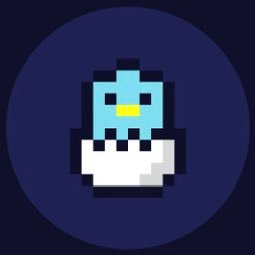

ブログ記事を書いたあと、アイキャッチ画像のサイズに迷ったことはありませんか。「1200×630にしておけばいい」という話を聞いたことがある方も多いと思いますが、実際にはプラットフォームや表示場所によって最適なサイズが異なります。
本記事では、主要なブログプラットフォームごとの推奨サイズ、SNSシェア時にトリミングされないためのポイント、そして素材を選ぶ際の考え方を整理します。「なんとなく適当なサイズで設定していた」という方も、一度この機会に整理してみてください。
アイキャッチ画像が重要な理由
アイキャッチ画像は、記事の「顔」です。ブログの一覧ページではサムネイルとして表示され、SNSでシェアされると自動的にOGP画像として使われます。適切なサイズで用意しておかないと、SNSシェア時に肝心な部分が切れる・余白だらけになる・ぼやけるといった問題が起きます。
また、アイキャッチはクリック率（CTR）にも影響します。検索結果やSNSのタイムラインでは、記事タイトルと並んでアイキャッチが読者の目に最初に触れる要素です。内容に合った画像を、正しいサイズで設定するだけで、同じ記事でも印象が大きく変わります。
まず知っておきたい：アスペクト比と実寸の違い
アイキャッチのサイズを考えるとき、アスペクト比（縦横の比率）と実寸（ピクセル数）は別の概念です。
アスペクト比は「16:9」「1.91:1」のように表現され、画像の形（横長・正方形など）を決めます。実寸はピクセル数で、同じ16:9でも「1280×720」と「1920×1080」では解像度が異なります。Webの場合、表示サイズより大きい画像を用意しておけばブラウザ側で縮小されるため、推奨サイズ以上のピクセル数で用意するのが基本です。
「推奨サイズ = 最小サイズ」と考えると分かりやすいです。それより小さいと引き伸ばされてぼやけ、同じかそれ以上であれば縮小表示されるため品質は保たれます。ただし極端に大きすぎると読み込みが遅くなるため、WebP形式で適切に圧縮しておくことが重要です。
プラットフォーム別の推奨アイキャッチサイズ
主要なブログ・メディアプラットフォームごとの推奨サイズをまとめました。
| プラットフォーム | 推奨サイズ | アスペクト比 | 備考 |
|---|---|---|---|
| WordPress | 1200×630 px | 1.91:1 | OGPと兼用しやすい定番サイズ |
| はてなブログ | 1200×630 px | 1.91:1 | カード表示・OGPともに対応 |
| note | 1280×670 px | 約1.91:1 | 公式推奨。ヘッダー画像と兼用も可 |
| Ameba ブログ | 1200×630 px | 1.91:1 | SNSシェア時のOGPに準拠 |
| Wix / Squarespace | 1200×628 px 以上 | 約1.91:1 | テーマによってトリミングあり |
表のとおり、1200×630 px（アスペクト比 1.91:1）が事実上の共通標準になっています。プラットフォームを複数使っている場合や、どれか一つに統一したい場合は、このサイズを基準にすると間違いありません。
SNSシェア時のサイズ：OGP画像として最適化する
ブログ記事がSNSでシェアされると、アイキャッチ画像はOGP（Open Graph Protocol）画像として表示されます。SNSごとに表示されるサイズや比率が異なるため、それぞれの仕様を把握しておくと安心です。
X（旧Twitter）でのOGP表示
Xでは、リンクカードに含まれる画像として表示されます。推奨は1200×628 px以上、アスペクト比 1.91:1です。これより縦長の画像は上下がトリミングされ、横長が足りない場合は左右に余白が入ることがあります。重要な要素（テキストやキャラクター）は画像の中央寄りに配置しておくと、トリミングされても見切れにくくなります。
Facebookでのリンクシェア
Facebookのリンクシェアでは、1200×630 pxが推奨されています。Xとほぼ同じ比率のため、1200×630で統一しておけばどちらにも対応できます。600×315 px以上であれば表示されますが、高解像度ディスプレイでのぼやけを防ぐためにも1200×630以上が現実的です。
LINEのリンクシェア
LINEでリンクを共有すると、OGP画像がプレビューとして表示されます。比率は1.91:1（横長）が基本ですが、正方形（1:1）で設定すると中央部分がトリミングされて表示される場合があります。1200×630のサイズであれば問題なく表示されます。
アイキャッチ画像を選ぶときの3つの基準
サイズの問題をクリアしたあとは、「どんな画像を選ぶか」という内容の問題になります。アイキャッチとして機能する画像には、次の3つの要素が揃っていると効果的です。
1. 記事の内容と関係がある
アイキャッチは記事の予告編です。画像を見た読者が「この記事には何が書いてあるか」をある程度予測できるものが理想です。「なんとなく雰囲気が合っている」程度でも構いませんが、内容と全くかけ離れた画像は読者の期待を裏切り、直帰率の上昇につながることがあります。
2. 文字を入れる場合は余白を意識する
アイキャッチにタイトルや説明文を入れるケースでは、画像の端から10〜15%程度の余白（セーフゾーン）を確保することをおすすめします。SNSでシェアされた際にプラットフォーム側でわずかにトリミングされることがあるため、重要なテキストが端に寄りすぎると切れてしまうことがあります。
3. 著作権・利用規約を確認する
インターネット上の画像を無断でアイキャッチに使うことは著作権侵害になります。フリー素材サイトを利用する場合も、「商用利用OK」かどうか、「クレジット表記が必要かどうか」を利用規約で確認する必要があります。ソザイノの素材は商用利用・登録不要で使えますが、どのサイトを利用する場合も利用規約の確認を習慣にしておくと安心です。
GoogleやBingの画像検索で「著作権フリー」フィルターをかけても、完全に安全とは言えないケースがあります。素材の出所が不明な画像は使用を避け、信頼できる素材サイトを利用するのが確実です。
WordPress でアイキャッチサイズを最適化する設定
WordPressには、アップロードした画像を自動的に複数サイズに変換する機能があります。「設定 → メディア」から「大」「中」「サムネイル」のサイズを変更できますが、アイキャッチとして使いたいサイズを明示的に指定しておくと、テーマ側が適切なサイズを選択してくれます。
また、WordPressで利用できるプラグイン「EWWW Image Optimizer」や「Converter for Media」を使えば、JPEGやPNG形式でアップロードした画像を自動でWebPに変換することができます。アイキャッチを1200×630のJPEGで用意しても、プラグインがWebPに変換して配信してくれるため、ページ読み込み速度を落とさずに済みます。
まとめ：迷ったら1200×630 px、WebP形式で
アイキャッチ画像のサイズは、プラットフォームやSNSによって細かく異なりますが、1200×630 px（アスペクト比 1.91:1）を基準にしておけば、主要なすべての環境で問題なく表示されます。
サイズと合わせて、ファイル形式もWebPで用意するとページ速度への影響を最小限に抑えられます。ソザイノではすべての素材をWebP形式・1200×630 pxを含む複数サイズで配信しており、ダウンロードしてそのままアイキャッチとして使える素材を揃えています。
アイキャッチ選びに毎回時間をかけるのが手間だと感じている方は、ぜひ素材ギャラリーを覗いてみてください。カテゴリ・タグで絞り込めるので、記事の内容に合った素材をすぐに見つけられます。
